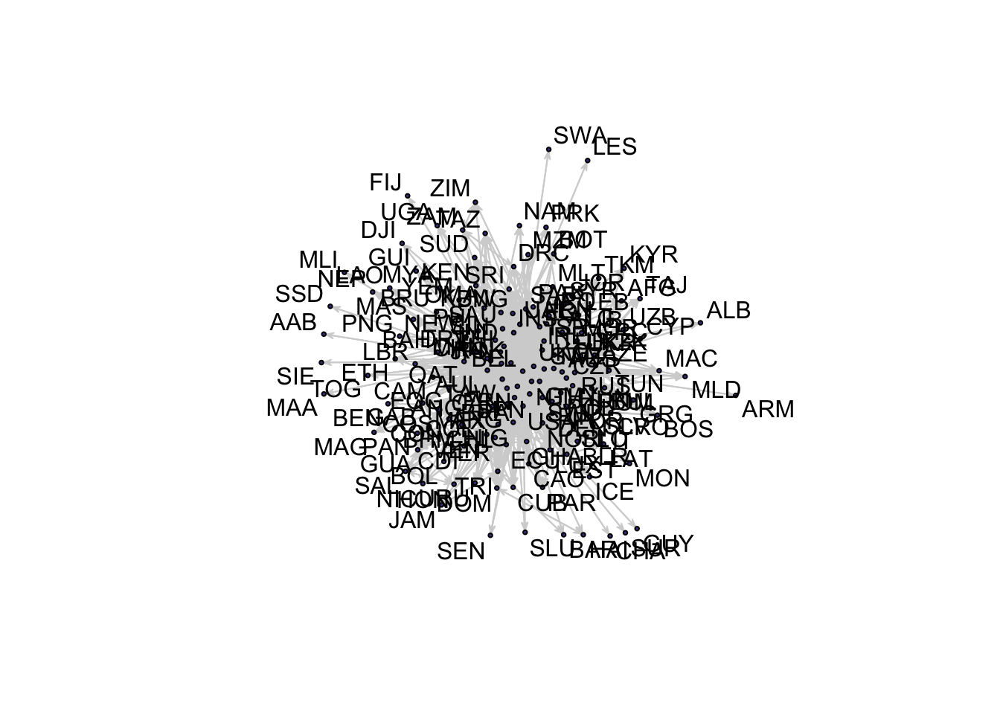
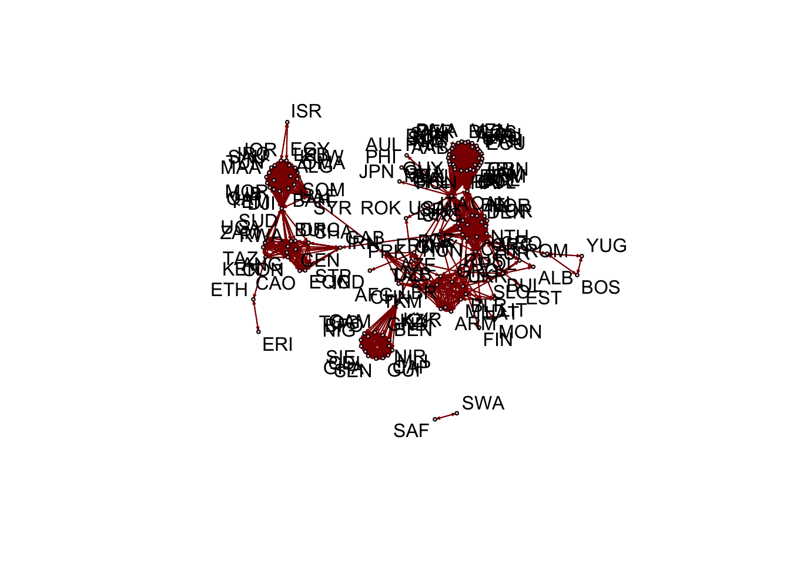
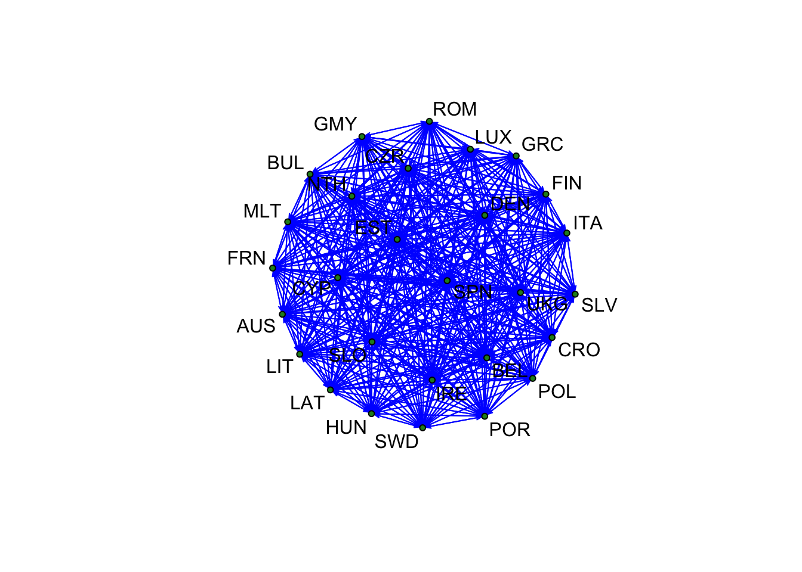
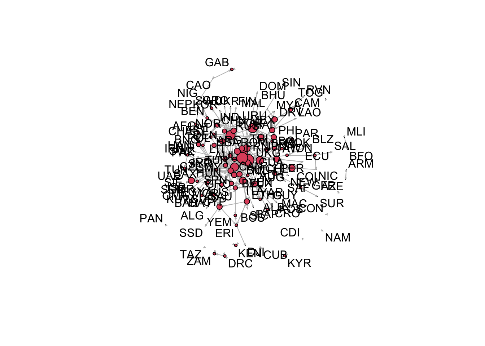

Don’t forget to call the libraries that you need for your code to run. If there is a package you have not used before, you may need to install it first.
library(statnet)
library(tidyverse)
# install.packages("countrycode")
library(countrycode)
# package can translate different country codes and is often usefulToday, we are working with different datasets from the Correlates of War Project. Check out their available data here: COW Homepage. The Correlates of War Project was founded in 1963 to assemble more accurate data on the incidence and extent of inter-state and extra-systemic war. By now, the data collection includes datasets on diplomatic exchanges, alliances, trade, IGO participation and much more.
In contrast to previous weeks, this website does not one solution to get from the data to the network visualisation and analysis. Instead, we provide examples for how to load and clean the data. You will need to pick a dataset you are interested in and download it. Then subset the data to the time period you would like to look at or specific links in your network, etc. Once you have your dataset ready, you will need to adjust the code from previous weeks (e.g. the for-loop) to turn the data into a network and visualise it. Also practice calculating centrality measures. If you get stuck, there is some additional code you can click at on the website to learn how we have made the networks we show here.
You can download the data sets here:
The Correlates of War Diplomatic Exchange data set captures diplomatic representation at the level of chargé d’affaires, minister, and ambassador between states. While some years are excluded, the data set generally includes snapshots of diplomatic exchanges every five years between 1817 and 2005. Thus is the codebook for more details: Codebook Diplomatic exchanges.
The following variables are in the data:
ccode1: state number of country 1ccode2: state number of country 2yearDR_at_1: Diplomatic representation level of side 2 at
side 1 (codebook for details)DR_at_2: Diplomatic representation level of side 1 at
side 2 (codebook for details)DE: Any diplomatic exchange between side 1 and side
2version: Current version of the data setMost scholars are likely to be primarily interested in whether
diplomatic representation existed between the two sides. The following
code reduces the data to only entries in which at least one side was
represented in the other side. However, I decided to further reduce it
and to only look at networks in which at least one side has an
ambassador (coded as 3, high representation) in the other country and to
focus on the time period before 1900. You could also change this and
focus on other levels of representation between countries (using the
variables DR_at_1 and DR_at_2). I am also
adding a string variable with state names to the data because I find
numeric state codes hard to remember.
# read the data
diplo <- read.csv("~/Dropbox/UCL/courses/networks/data/Diplomatic_Exchange_2006v1.csv")
# reduce to only entries in which at least one side was represented in the other side
diplo <- filter(diplo, DE == 1)
# reduce the data to entries in which at least one country is represented as an ambassador
diplo <- filter(diplo, DR_at_1 == 3| DR_at_2 == 3)
# reduce the data to entries before 2000
diplo <- filter(diplo, year <= 2000)
# since I often forget what numeric state codes stand for, I turn them into strings of statenames
diplo$country1 <- countrycode(diplo$ccode1,origin="cown",destination = "cowc")
diplo$country1 <- ifelse(diplo$ccode1==260, "GER", diplo$country1)
diplo$country1 <- ifelse(diplo$ccode1==730, "KOR", diplo$country1)
diplo$country2 <- countrycode(diplo$ccode2,origin="cown",destination = "cowc")
diplo$country2 <- ifelse(diplo$ccode2==260, "KOR", diplo$country2)
diplo$country2 <- ifelse(diplo$ccode2==730, "KOR", diplo$country2)
# now the data is in a good shape to turn it into a networkPlease find below a network visualisation of diplomatic relationships between states: You can see that even with my subsetting of the data to only diplomatic relations with high representation and before 2000, the network is quite dense already. This is because many states have many diplomatic relationships. Here it might be relevant to work more with network statistics to understand which countries are particularly central in the network.
# get string of unique states in the data
diplo_states <- unique(c(as.character(diplo$country1),as.character(diplo$country2)))
# make an empty matrix
diploMat<- matrix(0,nrow=length(diplo_states),ncol=length(diplo_states))
rownames(diploMat) <- diplo_states
colnames(diploMat) <- diplo_states
# fill the empty matrix
for(i in 1:dim(diplo)[1]){
diploMat[as.character(diplo$country1[i]),as.character(diplo$country2[i])] <-
diploMat[as.character(diplo$country1[i]),as.character(diplo$country2[i])]+1
}
# tell R to understand this matrix as a network
diploNet <- network(diploMat,directed=FALSE)
network.vertex.names(diploNet) <- diplo_states
gplot(diploNet,
label=diplo_states,
vertex.cex=0.5,
edge.lwd=0.01,
arrowhead.cex=0.5,
node.col ="darkgray",
edge.col="turquoise",gmode="digraph")The trade dataset is the result of the effort to code trade flows between statesfor the period 1870-2014. The data include information on both bilateral trade flows and total national imports and exports. The dyadic trade dataset describes import and export data in current U.S. dollars for pairs of sovereign states and is the one that you want to use for network analysis. Here a selection of important variables:
ccode1: state number of country 1ccode2: state number of country 2yearimporter1: Name of country 1importer2: Name of country 2flow1: Imports of country 1 from country 2 (US millions
of current dollars)flow2: Imports of country 3 from country 1 (US millions
of current dollars)smoothtotrade: Smoothed total trade valuesBecause I expect this dataset to be quite comprehensive (many states have some form of trade relations with each other), I only look at the time since 2000. I also limit the dataset to only links in which countries have a higher trade relation with each other than the average recorded between 2000 and 2014.
# read the data
trade <- read.csv("~/Dropbox/UCL/courses/networks/data/Dyadic_COW_4.0.csv")
# selecting relevant variables
trade <- select(trade, c("importer1","importer2","year","flow1","flow2", "smoothtotrade"))
# only focus on years since 2000
trade <- filter(trade, year >= 2000)
# only focus on trade relations in which the total trade value between countries 1 and 2 is higher than the average
trade <- filter(trade, smoothtotrade >= mean(smoothtotrade))
# since the state names are so long, I turn them into shorter state names
trade$importer1 <- countrycode(trade$importer1,origin="country.name",destination = "cowc")
trade$importer2 <- countrycode(trade$importer2,origin="country.name",destination = "cowc")
# now the data is in a good shape to turn it into a networkPlease find below a visualisation of above average trade flows between countriess from 2000 to 2014:
# get string of unique states in the data
trade_states <- unique(c(as.character(trade$importer1),as.character(trade$importer2)))
# make an empty matrix
tradeMat <- matrix(0,nrow=length(trade_states),ncol=length(trade_states))
rownames(tradeMat) <- trade_states
colnames(tradeMat) <- trade_states
# fill the empty matrix
for(i in 1:dim(trade)[1]){
tradeMat[as.character(trade$importer1[i]),as.character(trade$importer2[i])] <-
tradeMat[as.character(trade$importer1[i]),as.character(trade$importer2[i])]+1
}
# tell R to understand this matrix as a network
tradeNet <- network(tradeMat,directed=FALSE)
network.vertex.names(tradeNet) <- trade_states
gplot(tradeNet,
label=trade_states,
vertex.cex=0.5,
edge.lwd=0.01,
vertex.col ="darkslateblue",
edge.col="lightgray",gmode="digraph")
This data set records all formal alliances among states between 1816
and 2012, including mutual defense pacts, non-aggression treaties, and
ententes. You want to focus on a dyad format
(alliance v4.1 by directed). In the example below, I use
directed dyad data on alliances. Here an example list of relevant
variables:
ccode1: state number of country 1ccode2: state number of country 2state_name1: name of country 1state_name2: name of country 2dyad_st_year: Start of alliance (year)dyad_end_year: End of alliance (year)right_censor: whether the alliance is active by the end
of 2012defense: whether there is a defence pact with the other
stateneutrality: whether there is a neutrality pact with the
other statenonagression: whether there is a non-aggression
pactI have decided to limit this data to only alliances that are currently active (right_censored) but you could think about many other approaches with this data.
ally <- read.csv("~/Dropbox/UCL/courses/networks/data/alliance_v4.1_by_directed.csv")
ally <- select(ally, c("ccode1","state_name1","ccode2","state_name2",
"dyad_st_year", "dyad_end_year", "right_censor",
"defense","neutrality","nonaggression"))
# only focus on current alliances (right_censored)
ally <- filter(ally, right_censor == 1)
# since the state names are so long, I turn them into shorter state names
ally$state_name1 <- countrycode(ally$state_name1,origin="country.name",destination = "cowc")
ally$state_name2 <- countrycode(ally$state_name2,origin="country.name",destination = "cowc")
# now the data is in a good shape to turn it into a networkPlease find below a visualisation of all currently active alliances in the data:
# get string of unique states in the data
ally_states <- unique(c(as.character(ally$state_name1),as.character(ally$state_name2)))
# make an empty matrix
allyMat <- matrix(0,nrow=length(ally_states),ncol=length(ally_states))
rownames(allyMat) <- ally_states
colnames(allyMat) <- ally_states
# fill the empty matrix
for(i in 1:dim(ally)[1]){
allyMat[as.character(ally$state_name1[i]),as.character(ally$state_name2[i])] <-
allyMat[as.character(ally$state_name1[i]),as.character(ally$state_name2[i])]+1
}
# tell R to understand this matrix as a network
allyNet <- network(allyMat,directed=TRUE)
network.vertex.names(allyNet) <- ally_states
gplot(allyNet,
label=ally_states,
vertex.cex=0.5,
edge.lwd=0.01,
arrowhead.cex=0.5,
vertex.col ="pink",
edge.col="darkred",gmode="digraph")
This data set tracks the status and membership of such organizations from 1815-2014. The IGO data are collected at 5-year intervals from 1815-1965, and annually thereafter. The data are presented in three forms with distinct units of analysis. Form 1 is organized by IGO, listing all IGOs with the IGO-year as the unit of analysis, and identifying all state members of the IGO in that year. Form 2 is organized by state, listing all states with the country-year as the unit of analysis, and identifying all IGO memberships of the state in that year. Form 3 combines individual country memberships into joint dyadic memberships in each IGO, marking joint membership in each IGO for each pair of states. This is the easiest to use for the purpose of setting up a network structure.
You can access the codebook here but here is a selection of relevant variables:
state1: COW code for the first state in the dyadstate2: COW code for the second state in the dyadyear: Calendar yearWARNING! This dataset will take very long to load. For the purpose of my demonstration, I have decided to focus on the year 2014 and on EU membership countries only. I want to explore the network of EU members in the year 2014 and understand which EU members are more tightly working together in multiple IGOs and which ones are active in less IGOs. This dataset is trickier because it is not in a long format that list all IGO memberships as individual rows but we can turn it into the right shape.
igo <- read.csv("~/Dropbox/UCL/courses/networks/data/dyadic_formatv3.csv")
# only focus on igo memberships in 2014 and for joint EU members
igo <- filter(igo, year == 2014 & EU == 1)
# now we have to count joint memberships in organisations
igo <- igo |>
# turn data into a long shape
pivot_longer(names_to = "igo", values_to="membership", cols = 7:540) |>
# filter that the membership has to be present
filter(membership ==1) |>
# select relevant variables
select(country1, country2, igo)
# now the data is in a good shape to turn it into a networkHere you can see the network of IGO memberships for EU members in 2014. As expected the EU members share a lot of joint IGO memberships with each other and a lot of ties are realised.
# get string of unique states in the data
igo_states <- unique(c(as.character(igo$country1),as.character(igo$country2)))
# make an empty matrix
igoMat <- matrix(0,nrow=length(igo_states),ncol=length(igo_states))
rownames(igoMat) <- igo_states
colnames(igoMat) <- igo_states
# fill the empty matrix
for(i in 1:dim(igo)[1]){
igoMat[as.character(igo$country1[i]),as.character(igo$country2[i])] <-
igoMat[as.character(igo$country1[i]),as.character(igo$country2[i])]+1
}
# tell R to understand this matrix as a network
igoNet <- network(igoMat,directed=FALSE)
network.vertex.names(igoNet) <- igo_states
gplot(igoNet,
label=igo_states,
vertex.cex=0.5,
edge.lwd=0.01,
arrowhead.cex=0.5,
vertex.col ="forestgreen",
edge.col="blue",gmode="digraph")
This dataset (familiar from previous weeks), records militarised interstate disputes between two states:
namea: Name of state Anameb: Name of state Bstrtyr: Start yearstrtmnth: Start monthendyr: End yearendmnth: End monthoutcome: Outcome of the dispute (0 = Ongoing, 1 =
Victory for A, 2 = Victory for B, 3 = Yield by A, 4 = Yield by B, 5 =
Stalemate, 6 = Compromise, 7 = Released, 8 = Unclear)fatlev: Fatality levels (0 = None, 1 = 1-25 deaths, 2 =
26-100 deaths, 3 = 101-250 deaths, 4 = 251-500 deaths, 5 = 501-999
deaths, 6 = 1000 or more deaths, -9 = missing)hihost: Highest level of hostility (1 = none, 2 =
threat to use force, 3 = display of force, 4 = use of force, 5 =
interstate war)revtypea: Type of revision sought by state A (0 = Not
applicable, 1 = Territory, 2 = Policy, 3= Regime/Government, 4 =
Other)As another example for how to subset data, I am plotting below the MID dataset again. In this example, I have decided to plot all militarised interstate disputes in the dataset that are directed and in which state A sought to gain territory from the militarised interstate dispute.
mid <- read.csv("~/Dropbox/UCL/courses/networks/data/Dyadic MIDs 4/dyadic_mid_4.02.csv")
# filter data to directed instances
mid <- filter(mid,rolea==1)
# only focus on territorial conflicts
mid <- filter(mid, revtypea == 1)
# select relevant variables
mid <- select(mid,
c("namea","nameb", "strtmnth","strtyr",
"endmnth","endyear", "outcome", "fatlev", "hihost",
"revtypea"))Below you can see a visualisation of militarised state disputes over territory. The size of the nodes represents the indegree centality of our network.
# create a string of unique state names in the mid data
mid_states <- unique(c(as.character(mid$namea), as.character(mid$nameb)))
# create and name an empty matrix
midMat <- matrix(0,nrow=length(mid_states),ncol=length(mid_states))
rownames(midMat) <- mid_states
colnames(midMat) <- mid_states
# fill the matrix with information
for(i in 1:dim(mid)[1]){
midMat[as.character(mid$namea[i]),as.character(mid$nameb[i])] <-
midMat[as.character(mid$namea[i]),as.character(mid$nameb[i])]+1
}
# tell r to understand the matrix as a network
midNet <- network(midMat,directed=TRUE)
network.vertex.names(midNet) <- mid_states
# calculate indegree centrality
in.n <- degree(midNet,cmode="indegree")
# plot the indegree centrality
gplot(midNet,
label=mid_states,
# this adjusts the size of the nodes
vertex.cex=log(in.n),
edge.lwd=0.01,
arrowhead.cex=0.5,
edge.col="grey",gmode="digraph")